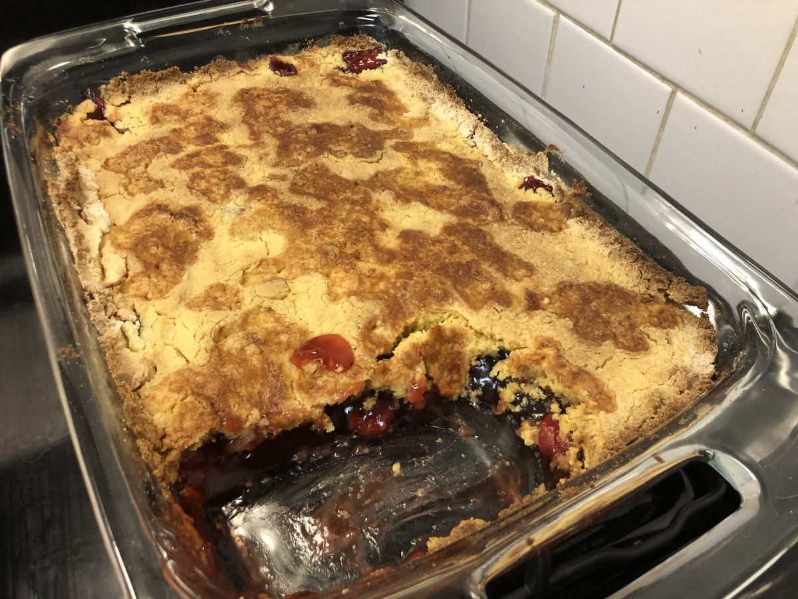

Based on https://www.thepioneerwoman.com/food-cooking/recipes/a40025449/cherry-dump-cake-recipe/
Personal rating: 5 / 5

2x 21-oz. cans cherry pie filling
2 tsp vanilla extract
1/4 tsp ground cinnamon
1/4 tsp salt
1/4 and 1/2 cup salted butter, divided (1.5 sticks)
15 oz. box yellow cake mix
Vanilla ice cream (for serving)